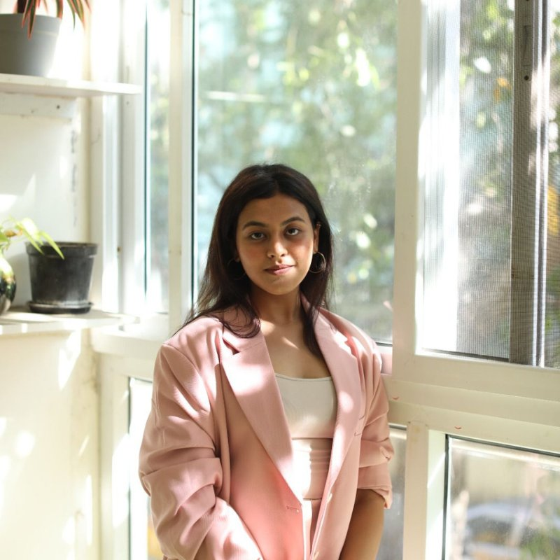
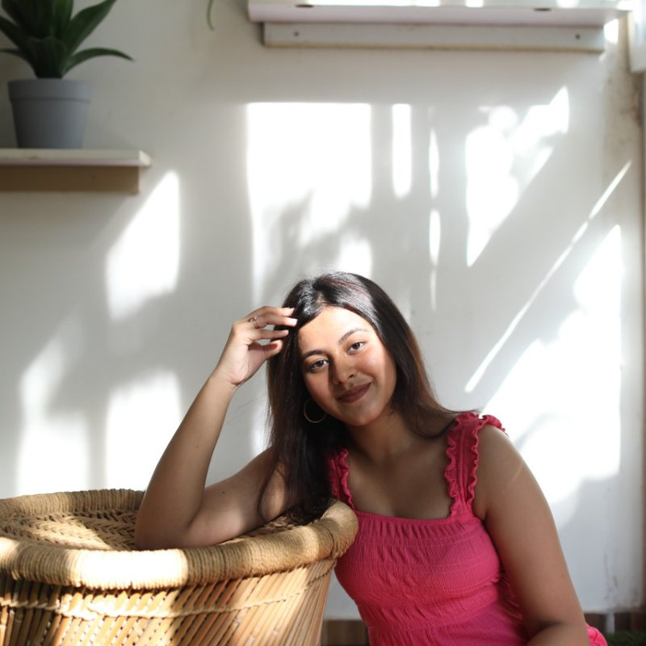
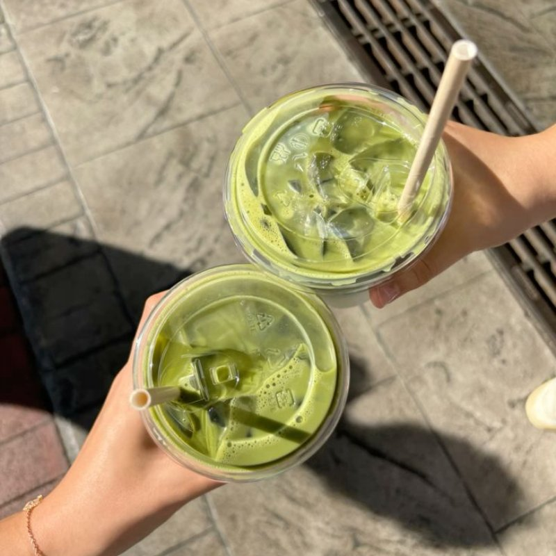
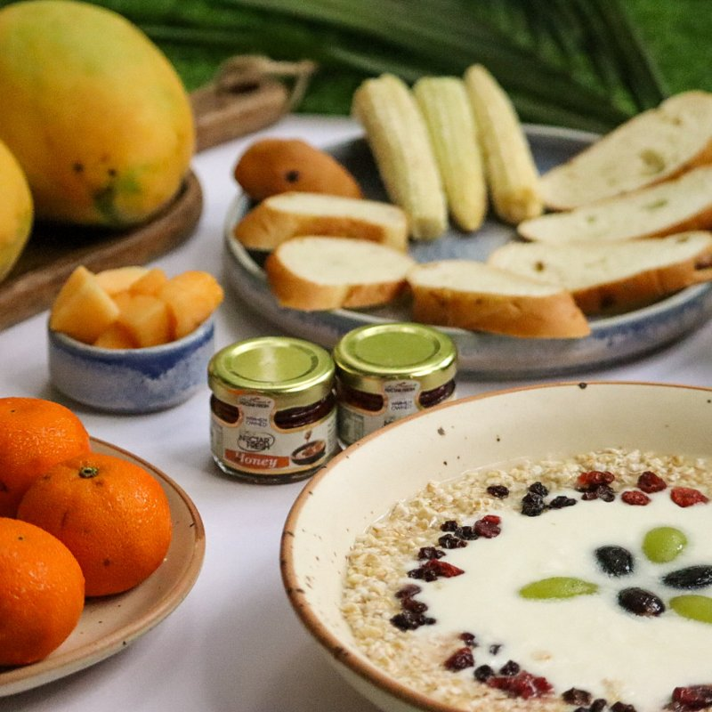

Hello everyone, I'm
Marketer | Storyteller | Strategist




"I believe great marketing starts with genuine curiosity and a good story."
Hey, I'm Aish. Full name - Aishwarya Sivakumar. But unless you're my mother and I'm in trouble, Aish works just fine. (Pronounced Eye-sh, for the curious.)
I'm a creative storyteller, marketer, and full-time dessert enthusiast based in Boston, MA. Born and raised in Chennai, India - a city of temples, filter coffee, and amazing food. But, Boston won me over slowly, and completely. The winters are brutal. But Dunkin' and sheer determination make it worth it. If I had to describe myself - I'd say that I'm a mix of 2 worlds - very south Indian when I want to be and very Bostonian at times : D
I recently graduated from Northeastern University with a degree in Digital Media, where I didn't just study marketing, I lived it. Real clients. Real campaigns. Holistic experience. It's the kind of education that teaches you what it actually takes to build a brand from the inside out.
My work lives at the intersection of creativity and strategy, spanning brand marketing, integrated marketing communications, SEO, GEO, paid social, and digital strategy.
When I'm not working, you'll probably catch me dancing, cooking (something ambitious I saw on a cooking show or an Instagram reel with varying degrees of success), taking pictures, reading or trying something completely new - pottery, hiking, a meditation class, a random concert on a Tuesday XD.
I'm a firm believer that experiences shape who you are. And honestly? They make for the best stories.
I'm a proud south Indian food loyalist - dosa and sambar will always have my heart. But I've also developed a serious thing for Italian food. I make amazing pasta, and I will accept this compliment on its behalf.
I'm endlessly curious about brands - why people love them, why they fail, what makes one stick. I learn from everywhere - podcasts, case studies, conversations with people way smarter than me, and the occasional LinkedIn post that actually makes me stop scrolling. I love being around people who challenge how I think. That's where the growth happens.